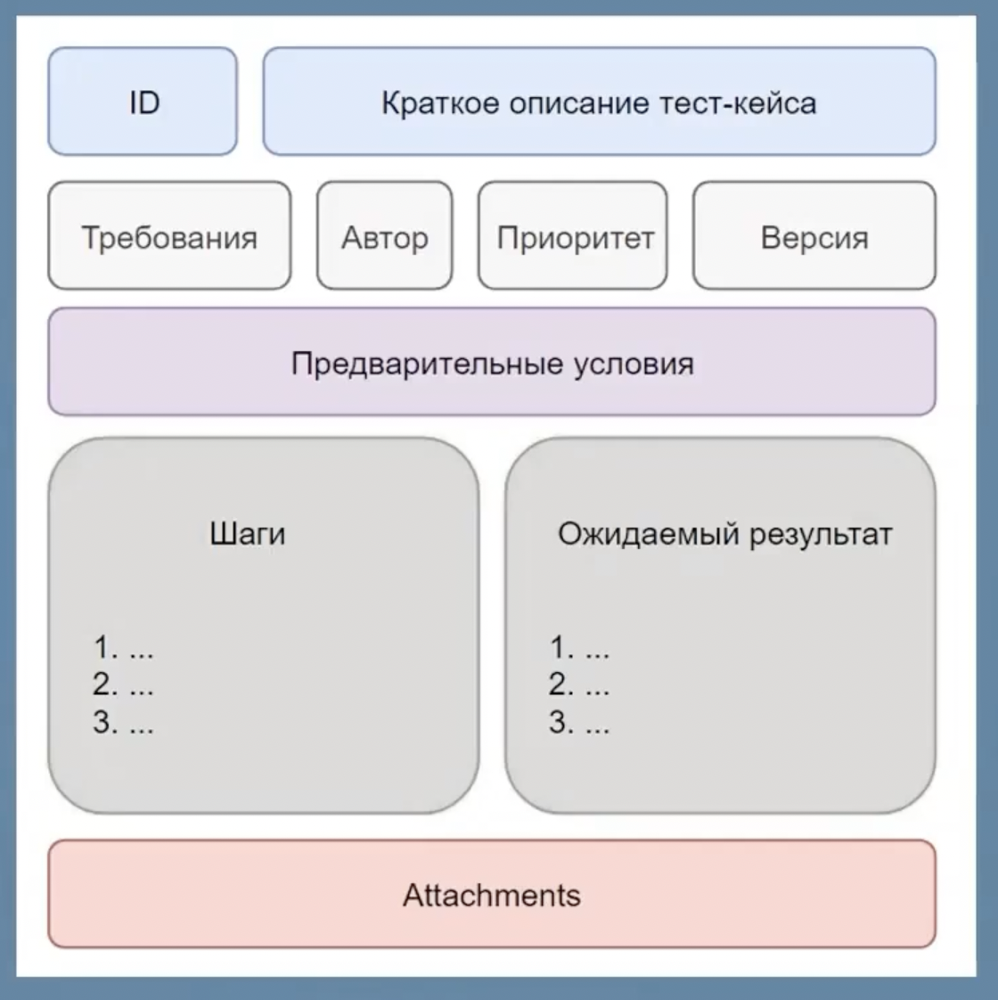
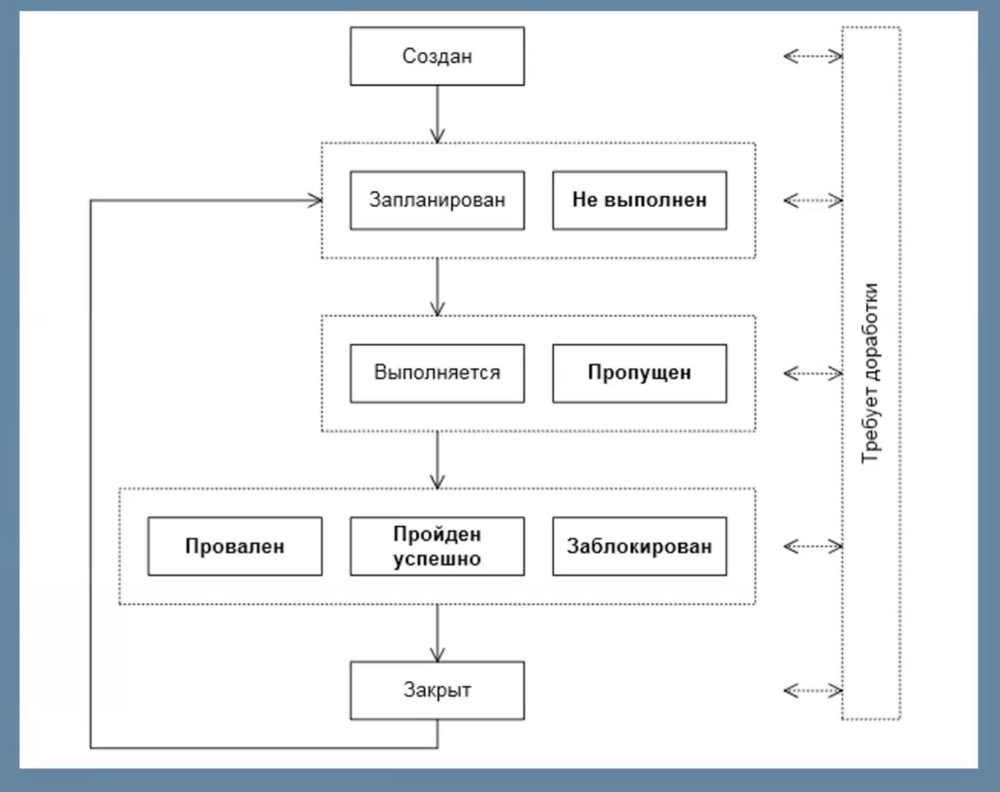

Чеклисты и Тест-кейсы
Чеклисты
Идея для проверки. Просто для индикации работает/не работает.
Список тестов. Создается на основе карты приложения. Для индикации процесса тестирования, процент функциональности тестирования. Должна быть последовательность и структура. Инструмент тестирования. Составляется на основе требований (ТЗ) перед началом процесса тестирования. Google-таблиц или Exel- хорошие инструменты.
Можно написать ожидаемый результат. Когда в других тестовых документах не планируется составлять. Когда ПО очень специфичное, трудное и ожидаемый результат трудно запомнить.
Если проект небольшой и нет обширного ТЗ, то можно пользоваться только чек-листом (без тесткейсов). С чеклистом работать проще.
Высокоуровневый документ - без деталей.
Google-sheets - Хороший инструмент для чеклистов
Простой чеклист
| ID | Проверка | Результат (статус) | Вид тестирования | Комментарии |
|---|---|---|---|---|
| TEST1 | Авторизация | ✅ (passed) | Smoke | |
| TEST2 | Регистрация | ❌ (failed) | Smoke | Что-то пошло не так |
Статусы проверок
Passed (Пройден), Failed (Провален), Blocked (Заблокирован), Skipped (Пропущен), No run (Не запускался)
Тест-кейсы
В первую очередь составляются тест-кейсы для дымового тестирования.
Проверка, состоящая из каких-то шагов, условий и ожидаемого результата.
Более подробный детализированный чеклист, расписанный по шагам (набор действий). Можно оформлять также в виде таблиыы. Шаги пути пользователя. (Систематизация и документация процесса тестирования)
Если проект объемный, длительный, версионный, большая команда, то лучше использовать тест-кейсы.
Низкоуровневый документ - с деталями. Чеклист по вертикали, тест-кейсы по горизонтали
Требования к тест-кейсу:
- должен быть понятным
- точное и подробное описание
- независимым от других тест-кейсов
- соответствующий требованиям
- воспроизводимым и переиспользуемым
- единообразие оформления
- граничные значения
Примерные колонки тест-кейсов
Обязательные:
- id
- title (Заголовок проверки)
- author
- modules or sub-module
- priority
- enviroment - тестовая среда
- precondition - условие, чтобы достичь этого тест-кейса (что нужно сделать, чтобы ...). Пишется в прошедшем времени (Открыта главная страница).
- steps - шаги, пишутся в будущем времени (ввести номер телефона)
- expected result
- status - passed/success, failed, blocked
- testing level - Вид/уровень тестирования
- comments - Комментарии
Опциональные:
- requirements - ссылка на требования
- postcondition
- actual result - (можно не использовать, а пользоваться статусом). Лучше описывать в задачах и баг-репортах
- attachments - приложенные файлы
- assigned - кто проверяет
Пример тест-кейса
| ID | Title | Module/Submodule | Priority | Requirements | Enviroment | Precondition | Steps | Expected result | Status | Comments | Testing level | Author |
|---|---|---|---|---|---|---|---|---|---|---|---|---|
| TC1 | Проверка отправки email | Регистрация/Форма регистрации | Средний | Some link | OS: MacOS 12.6, Google Chrome 105 | 1.Открыта форма 2.Пользователь не зарегистрирован | 1.Step1 2.Step2 3.Step3 | Email отправлен пользователю | Success | Some comments | Smoke/Positive | Some Tester |
Пример таблицы совместимости (кроссбраузерность и кроссплатформенность)
| ID | Title | Окружение №1 | Окружение №2 | Окружение №3 | Окружение №4 |
|---|---|---|---|---|---|
| TC1 | Проверка отправки email | ✅ | ✅ | ✅ | ✅ |
| TC2 | Проверка отправки кода | ✅ | ✅ | ✅ | ✅ |
| TC3 | Проверка отправки sms | ✅ | ✅ | ❌ | ❌ |
Виды тест-кейсов
- Простые - очень узконаправленные, точечные (одно поле, один ui-элемент и т.д.)
- Сложные - проверка функциональности, где может быть много шагов и много разных элементов
Виды тестирования у тест-кейсов
Сначала проверяются позитивные, потом негативные. Нет смысла проверять негативные, если позитивные фейлятся.
Позитивный - корректные входные данные. Цель - убедиться, что все работает правильно, как и задумывалось (под большинство пользователей). "Я всё проверил и у меня все работает!" (тестировщик с идеальными входными данными).
Негативный - некорректные (ошибочные) входные данные. Цель - убедиться, что система не ломается и остаётся стабильной, даже при вводе неправильных данных. "Нифига оно не работает!" (тестировщик-ломатор). Чаще всего баги кроются в негативных сценариях.
Валидация - как раз должна предотвратить негативные сценарии. Валидация на фронте и вылидация на бэке.
Уровни тестирования и приоритет у тест-кейсов
- Дымовое - высокий приоритет
- Функциональное - средний приоритет
- Нефункциональное - низкий приоритет
Жизненный цикл тест-кейса
Test run
Прогон тест-кейсов, test suite. Индикация того, какие тест-кейсы прошли успешно, а какие нет.